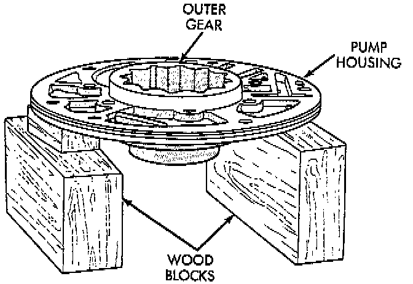
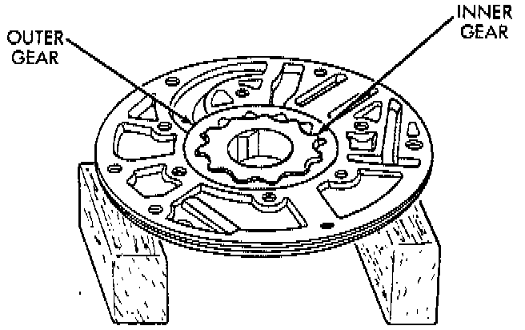
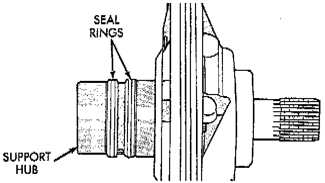
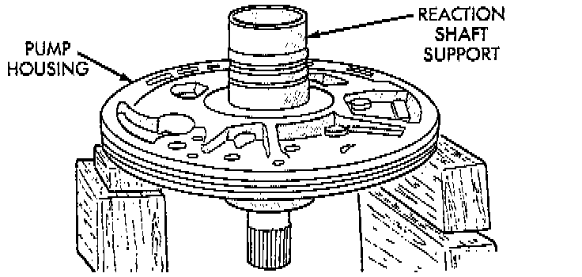
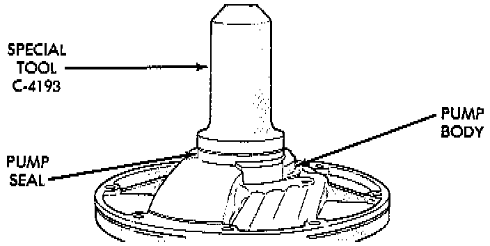

Assembly
1. Lubricate gear bore in pump housing with transmission fluid.2. Lubricate pump gears with transmission fluid.

3. Support pump housing on wood blocks.
4. Install outer gear in pump housing. Gear can be installed either way (it is not a one-way fit).

5. Install pump inner gear.
CAUTION: The pump inner gear is a one way fit. The bore on one side of the gear inside diameter (I.D.) is chamfered. Be sure the chamfered side faces forward (to front of pump).
6. Install new thrust washer on hub of reaction shaft support. Lubricate washer with transmission fluid or petroleum jelly.

7. If reaction shaft seal rings are being replaced, install new seal rings on support hub. Lubricate seal rings with transmission fluid or petroleum jelly after installation. Squeeze each ring until ring ends are securely hooked together.
CAUTION: The reaction shaft support seal rings will break if overspread, or twisted. If new rings are being installed, spread them only enough for installation. Also be very sure the ring ends are securely hooked together after installation. Otherwise, the rings will either prevent pump installation, or break during installation.

8. Install reaction shaft support on pump housing.
9. Align reaction support on pump housing. Use alignment marks made at disassembly. Or, rotate support until bolt holes in support and pump housing are all aligned (holes are offset for one-way fit).
10. Install all bolts that attach support to pump housing. Then tighten bolts finger tight.
11. Tighten support-to-pump bolts to required torque as follows:
a. Reverse pump assembly and install it in transmission case. Position pump so bolts are facing out and are accessible.
b. Secure pump assembly in case with 2 or 3 bolts, or with pilot studs.
c. Tighten support-to-pump bolts to 20 Nm (15 ft. lbs.).
d. Remove pump assembly from transmission case.

12. Install new oil seal in pump with Special Tool C-4193 and Tool Handle C-4171, or equivalents. Be sure seal lip faces inward.
13. Install new seal ring around pump housing. Be sure seal is properly seated in groove.
14. Lubricate lip of pump oil seal and O-ring seal with transmission fluid.